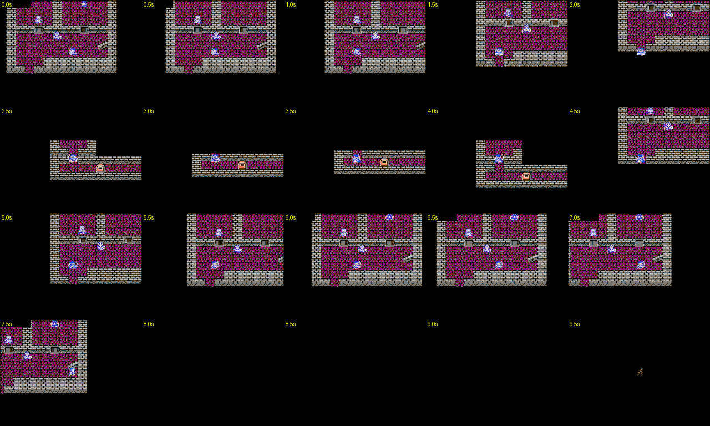
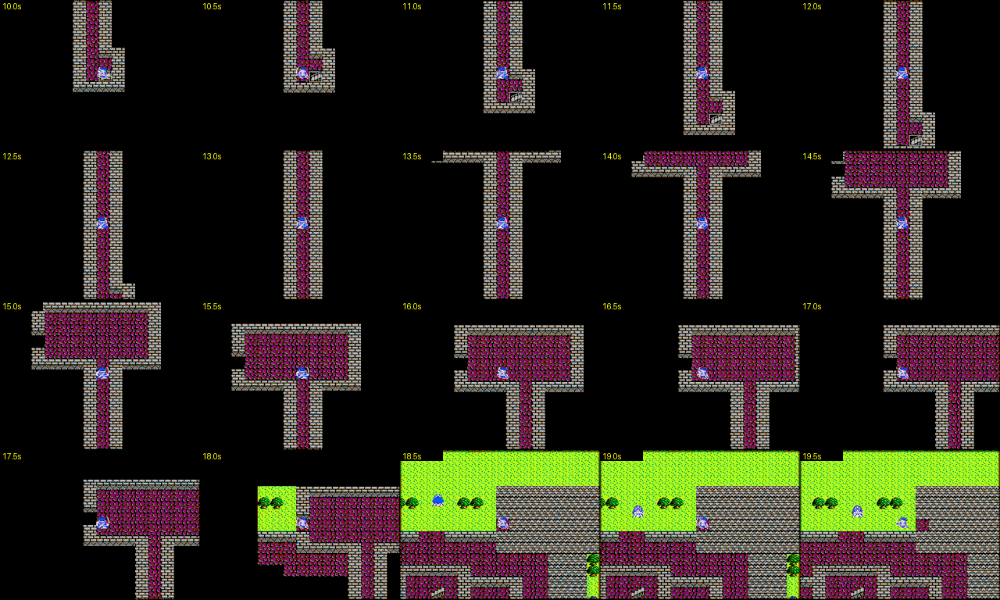
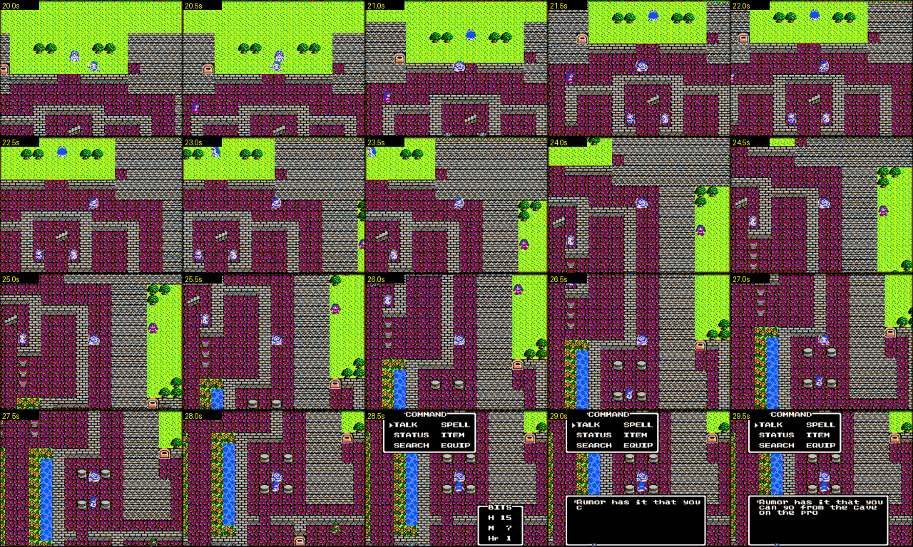

Segment (video + audio)
Click any thumbnail below to seek the player to that moment.
What happens in this window

Contact sheets: every 0.5 s, 20 frames each (below).
Contact sheets


Transition into the corridor — fade to black
Every frame at 30 fps from 599.70s. The screen steps down
twice, then holds black.
Transition out of the corridor — fade up from black
Every frame at 30 fps from 601.50s. Two steps up out of
black, then the new room is drawn in.